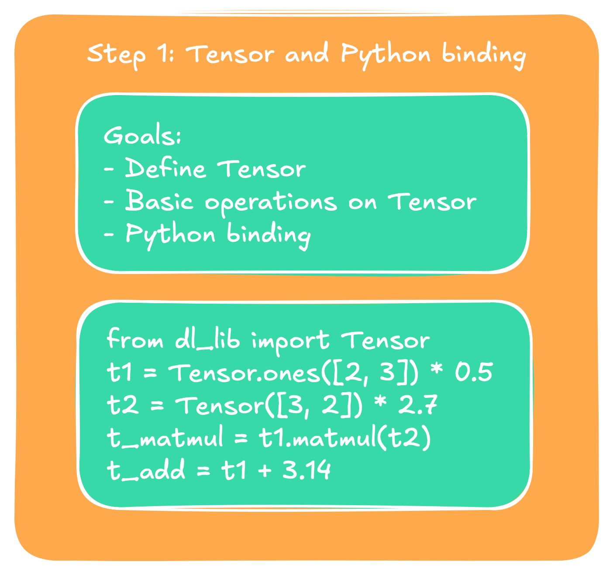
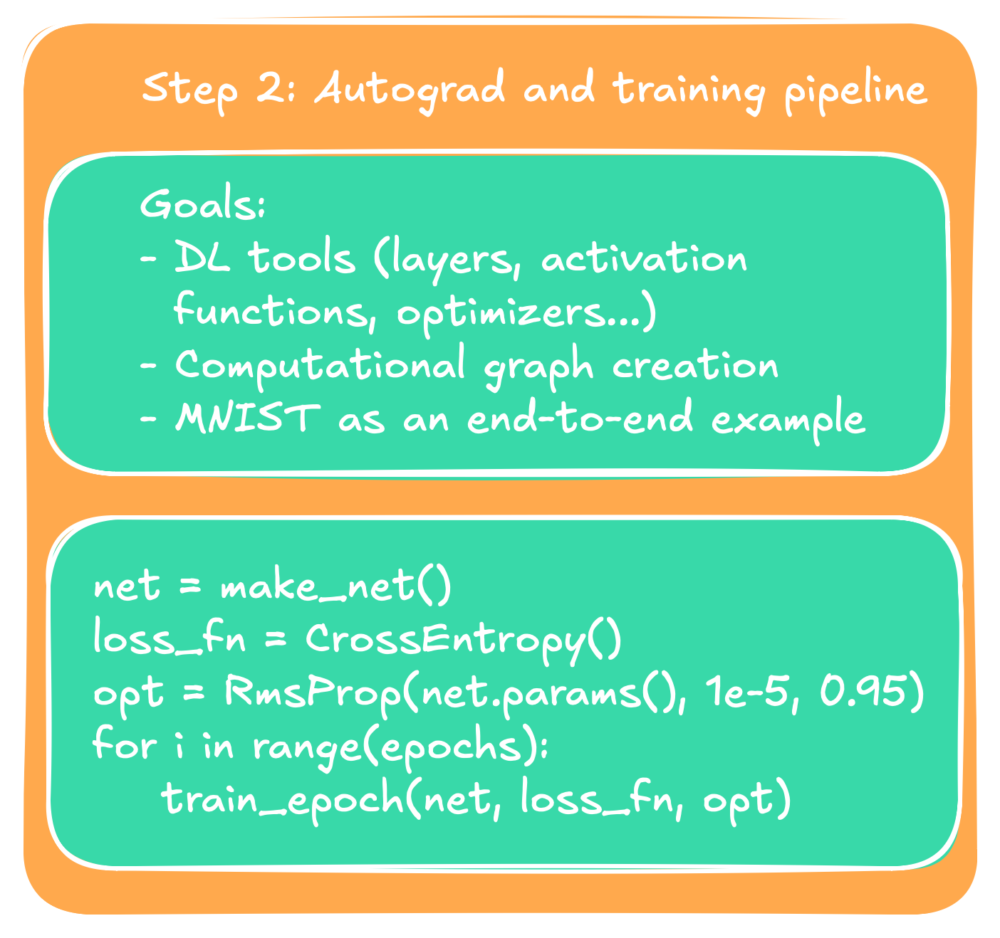
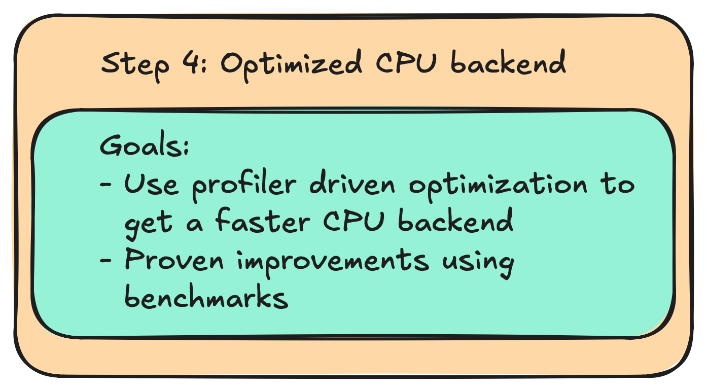

If you are like me then chances are things don't really stick with you unless you really
understand how they work from the ground up. Having used PyTorch and Tensorflow/Keras for
a while I never really understood why things are the way they are in those. So I decided
to implement my own small library to train neural networks. It turned out to be quite
similar to PyTorch in its frontend, so I can make a strong case for this one now. In the
following multi-part series I will walk you step-by-step through the components that are necessary
to build your own library. The posts planned so far are:
Part 1 - Tensor & Python frontend
Part 1 - Tensor & Python frontend:
First we introduce the basic structure of the Tensor. By the end of this one
we will have basic Python interface to instantiate Tensors and do basic operations
on them such as MatMul, addition, and elementwise multiplication. This will be the easiest
to grasp blogpost, as we lay the foundation for the more specialized ones that follow, and will
be mainly about software design.
Part 1: Tensor interface and Python bindings.

Part 1: Tensor interface and Python bindings.
Part 2 - Autograd and training pipeline
Part 2 - Autograd and training pipeline:
Part 2 will be all about training. We will introduce the
computational graph, show how we can build it dynamically during run-time, how to use it to enable autograd,
and everything that we needfor a basic network implementation. It will conclude in a running MNIST end-to-end
training pipeline built from scratch.
Part 2: Autograd and training pipeline.

Part 2: Autograd and training pipeline.
Part 3 - CUDA backend implementation and optimization
Part 3 - CUDA backend implementation and optimization:
Having built a minimal MNIST example,
we take a break from ML itself and will start to
make it actually practical to use. The main challenge for anything ML from the users
perspective are performance and energy/hardware efficiency. To do so we will enable the
GPU by implementing our backend in CUDA. We will then optimize the CUDA backend step-by-step
using profilers (NSYS and NCU).
Part 3: CUDA backend implementation and optimization.Part 3: CUDA backend implementation and optimization.
Part 4 - CPU backend optimization
Part 4 - CPU backend optimization:
For everyone who does not have an NVIDIA GPU at hand,
but also for the fun of it, we will
optimize our C++ backend for the CPU version as well. We will use techniques such as cache
optimization, thread pools, and hardware accelerators such as AVX to achieve better runtime.

Part 4: CPU backend optimization.Part 4: CPU backend optimization.
If we still have time we can then continue implementing advanced models such as transformers
and computer vision modules, and provide further optimization techniques guided by larger models.
The blogposts themselves explain the main points, programming techniques, and design choices,
while everything is backed up by a real
GitHub repository
that has been built in real time and can be used for a full executable example. Git commits
and release notes index the correct versions.
Preliminary thoughts
Before we start we want to think about the overall structure that we want to have. We want our
design to be flexible for maintainance, modular, and easy to change. In short, we want to obey
the
SOLID principles
.
Because neither of us can anticipate what is going to happen in the future we can make decisions
now that minimize the risk of major overhauls with a little bit of foreshadowing. Taking a look at
current developments we can see the following trends:
TODO: make this a figure too
New data types are introduced to optimize computation.
Edge devices are expected to run AI (egde AI).
Hardware accelerators and GPUs are becoming more important by the day.
New ways of computation keep on being researched.
We can take the following lessons from those to secure our camp:
Do not settle for a datatype yet, but use a generic one we can quickly find and exchange.
Same goes for tensor representations for edge devices.
Keep the data management device agnostic to support GPUs and other types of special hardware.
Make things as modular as possible to incorporate new research as quick as possible.
We will go further into those below, but two things to start with: Because we can see that the dimensions and
the fundamental data types of representation are changing we can make our future lives easier by using aliases.
While two of them might look confusing we can easily make them signed or unsigned, whatever suits our purpose
better, and as for ftype, we can either change the data type completely throughout the whole project,
or we can adjust punctually very easily. After all, a global search for "ftype" will give us better results than a
global search for "float" or "double", helping us refactoring later if we wanted to.
// src/utility/global_parameters.h -> will be renamed util.h later
using ftype = float;
using tensorDim_t = std::uint16_t; // represent one dimension of a tensor
using tensorSize_t = std::uint32_t; // represent the total size of a tensor
static_assert(sizeof(tensorSize_t) >= sizeof(tensorDim_t));
Designing the tensor backend
The heart of deep learning is always the tensor data structure. What sounds fancy at first actually
becomes pretty quickly just plain and simple linear algebra in spirit. Basically, a tensor is a
generalized matrix with an arbitrary large number of dimension. So, basically a tensor is a data
structure of the form $\mathbb{R}^n$, $n \in \mathbb{N}^+$. In code, this will be a multidimensional
array of a floating point type, for which we have to figure out the best shape. The beginning of the
tensor then looks like this:
// src/data_modeling/tensor.h
class Tensor final { // final to promote flat hierarchies
private:
Dimension dims;
std::unique_ptr values = nullptr; // contained values of tensor
public:
// stuff goes here
}
TODO: use a sort of class diagram that shows the 3 modules and what each is for
Here, we implicitly use two new datatypes we have yet to define: tensorValues_t and
Dimension. We start with the latter, since it is easier to explain. Basically, what it
does is represent the dimensions of our tensor. Because we want a Python binding later, there's no
implicit conversion method from any Python datatype to our Dimension data type, thus we use a
std::vector as an argument. The data type looks like this for now:
There are no real surprises here. Worth noting is probably only that we gave
the data type implicitly a second function apart from representing the dimensions,
namely through the attribute tensorSize_t size. Whether the total size,
which is the product of the input to the constructor
Dimension(const std::vector& dims), should be part of the dimension
or the tensor itself is more a matter of taste. We leave it here for now, and shifting it over
will be an easy task. The Dimension data type will become more interesting later, when
we use strided access patterns to represent transposed or permuted tensors. For now we keep it
simple.
The second data structure tensorValues_t is the more interesting one for now. Its main
purpose is to manage the underlying data. Whether the tensor's data sits on a GPU, the computer's memory,
or any other device such as a TPU should not matter to the tensor. And managing that is the job of this one.
Because we already plan concretely to use CUDA later on we encode the device in an enum value via
// src/data_modeling/device.h
enum class Device {
CPU,
CUDA
};
With this in mind, we define the tensorValues_t as a private nested class inside the tensor class,
as only the tensor should have access to the values. Anybody else who wants to see the data has to knock
first and ask friendly. The implementation of this one goes as follows:
Again, no big surprises here. The only things probably worth noting are the resize()
method, which could be better named init() at this stage. The choice for resize will
make sense later.
Interesting is also the static field defaultDevice. We enable a
default device via a global field. When I was a kid my grandma used to always tell me "Code says
more than a thousand words", so in this spirit here we go:
TODO - explain linear indexing of array, tensor constructors, and add some math operators to the tensors
Then add some printing functions, and we can move to the second part, the Python binding